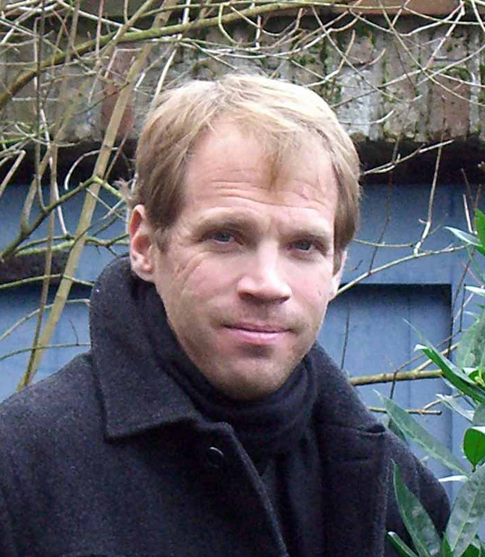

|  |
Scott Van Keuren , Assistant Professor of Anthropology, received his B.A. in Art History and B.S. in Anthropology from Southern Methodist University, and M.A. and Ph.D. from the University of Arizona. He comes to UVM from the Natural History Museum of Los Angeles County where he served as Curator of North American Archaeology and Head of Archaeology. He has taught undergraduate courses at the University of Southern California and the California Institute of Technology (Cal Tech).
Dr. Van Keuren is a North American archaeologist who studies prehistoric cultures of the Southwest and specializes in the analysis of ancient pottery. His current project examines the economic and political organization of Ancestral Pueblo (or "Anasazi") societies near the close of prehistory. He recently received a major National Science Foundation grant to excavate fourteenth century villages in the mountains of eastern Arizona. His other interests include community archaeology, the preservation and stewardship of archaeological sites, and museum studies. He is teaching Prehistoric Archaeology this fall.
For more information on Professor Van Keuren, visit his website.